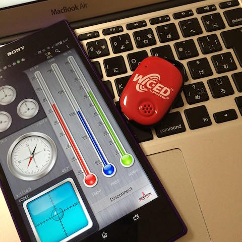
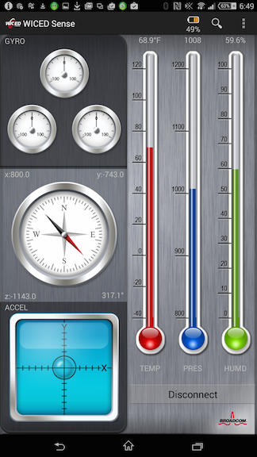

昨年末、IoT関連企業に転職したので、Raspberry PiとBLEタグで遊んでみようと思います。
入手したのはBroadcomのWICED Sense。これ一つに温度、湿度、気圧、ジャイロスコープ、加速度センサー、コンパスが内蔵されています。

購入は以下からできますが、マクニカの方は、現時点では売り切れのようです。
Android/iPhone用のアプリが提供されていて、以下から入手できます。

まずは、Macから接続してみましょう。LightBlueというアプリケーションを使います。
“WICED Sense Kit”というデバイスが見つかるはずなので、[Service: 180A] - [Characteristic: 2A29] を選択すると、”Broadcom”という文字列が見つかるはずです。
これらの”180A”や”2A29”といった４桁のUUIDはBluetoothの規格として定義されていて、Bluetoothの Developer siteで確認できます。
見たところ、WICED Senseが対応しているService/Characteristicは以下のもののようです。
一方、32桁のUUIDはデバイス開発者が独自に定義したものとなります。どうやら”33EF9113-3B55-413E-B553-FEA1EAADA459”がセンサーデータのようです。
“Subscrib”ボタンを押すと以下のようなデータを取得できます。
1
2
3
4
5
6
7
8
9
10
11
12
13
14
15
16
17
18
19
20
| - UUID 33EF9113-3B55-413E-B553-FEA1EAADA459 Subscribed
- UUID 33EF9113-3B55-413E-B553-FEA1EAADA459 Notified Value: 0x0B000001005200C4B035B2F4DCF703290198FB
- UUID 33EF9113-3B55-413E-B553-FEA1EAADA459 Notified Value: 0x0B000001005200BED7CBE94A95F7032F019AFB
- UUID 33EF9113-3B55-413E-B553-FEA1EAADA459 Notified Value: 0x0B0000010052007F6482485AC9F90322019DFB
- UUID 33EF9113-3B55-413E-B553-FEA1EAADA459 Notified Value: 0x3468027227BC00
- UUID 33EF9113-3B55-413E-B553-FEA1EAADA459 Notified Value: 0x0B000001005200CC5F6790AC0CF4032B01A4FB
- UUID 33EF9113-3B55-413E-B553-FEA1EAADA459 Notified Value: 0x0B000001005200305DF834E518F9032901ADFB
- UUID 33EF9113-3B55-413E-B553-FEA1EAADA459 Notified Value: 0x0B00000100520071A29FA0AD24EF0320019CFB
- UUID 33EF9113-3B55-413E-B553-FEA1EAADA459 Notified Value: 0x0B0000010052006159577DF430F1031A01A6FB
- UUID 33EF9113-3B55-413E-B553-FEA1EAADA459 Notified Value: 0x0B000001005200781006543EE5F7032F01B1FB
- UUID 33EF9113-3B55-413E-B553-FEA1EAADA459 Notified Value: 0x0B000001005200C90EC3C2721AF7032301ACFB
- UUID 33EF9113-3B55-413E-B553-FEA1EAADA459 Notified Value: 0x0B00000100520043548F66DE24F403200195FB
- UUID 33EF9113-3B55-413E-B553-FEA1EAADA459 Notified Value: 0x0B000001005200770AA60AC130FA0321019CFB
- UUID 33EF9113-3B55-413E-B553-FEA1EAADA459 Notified Value: 0x0B000001005200554F7BAF093DF4032B01A4FB
- UUID 33EF9113-3B55-413E-B553-FEA1EAADA459 Notified Value: 0x3468027227BC00
- UUID 33EF9113-3B55-413E-B553-FEA1EAADA459 Notified Value: 0x0B000001005300644A06F6B154F7031D01B5FB
- UUID 33EF9113-3B55-413E-B553-FEA1EAADA459 Notified Value: 0x0B0000010052004201EA9AAF5E05041F01ACFB
- UUID 33EF9113-3B55-413E-B553-FEA1EAADA459 Notified Value: 0x0B0000010052000846EC3E2069F0031C01A1FB
- UUID 33EF9113-3B55-413E-B553-FEA1EAADA459 Notified Value: 0x0B000001005200694342E31EA4F7032D0198FB
- UUID 33EF9113-3B55-413E-B553-FEA1EAADA459 Unsubscribed
|
Sensor Dataのフォーマットはクローズドのようなのでここには書きませんが、以下から入手できます。
* http://community.broadcom.com/docs/DOC-1775
アカウント登録が必要ですが、企業や大学のメールアドレスならすぐに承認されます。ただし、gmailなどのフリーなemailアドレスだと拒否されてしまいます。
というわけで、今回はWICED SenseがどのようなSensor Dataを送ってくるかがわかりました。次回はRaspberry Piのセットアップを行いたいと思います。